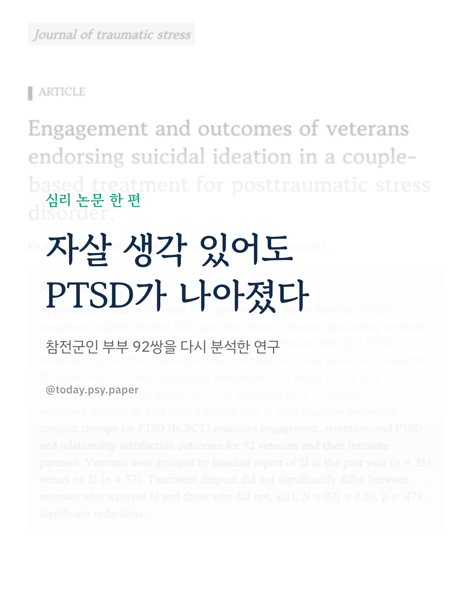
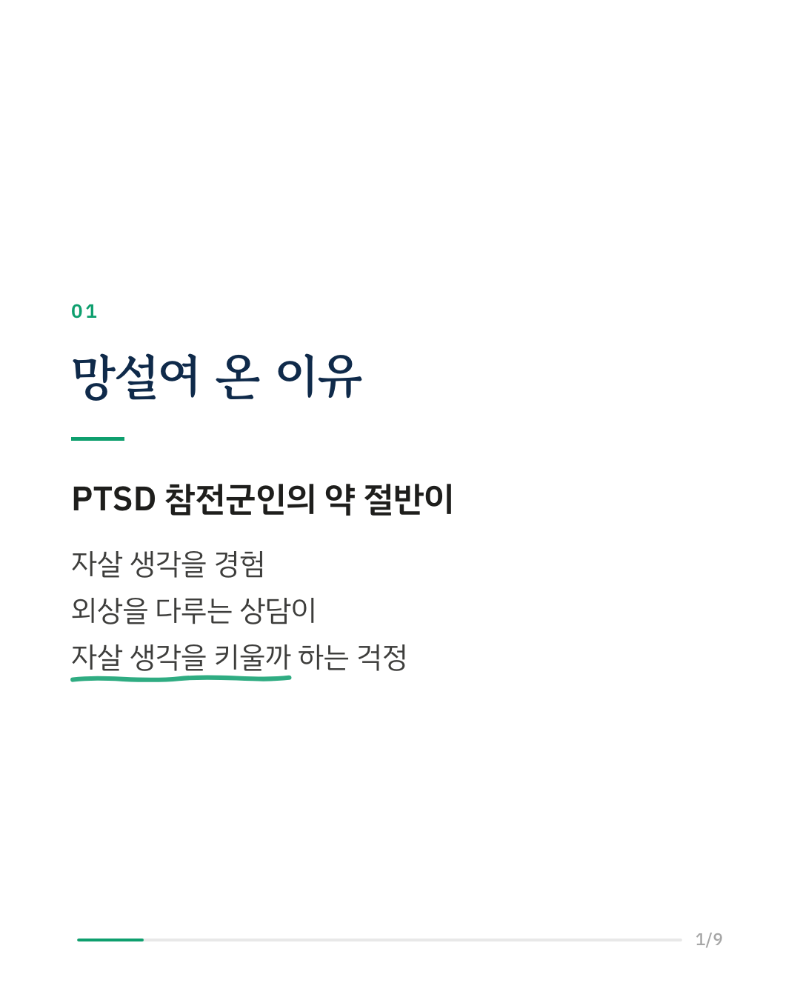
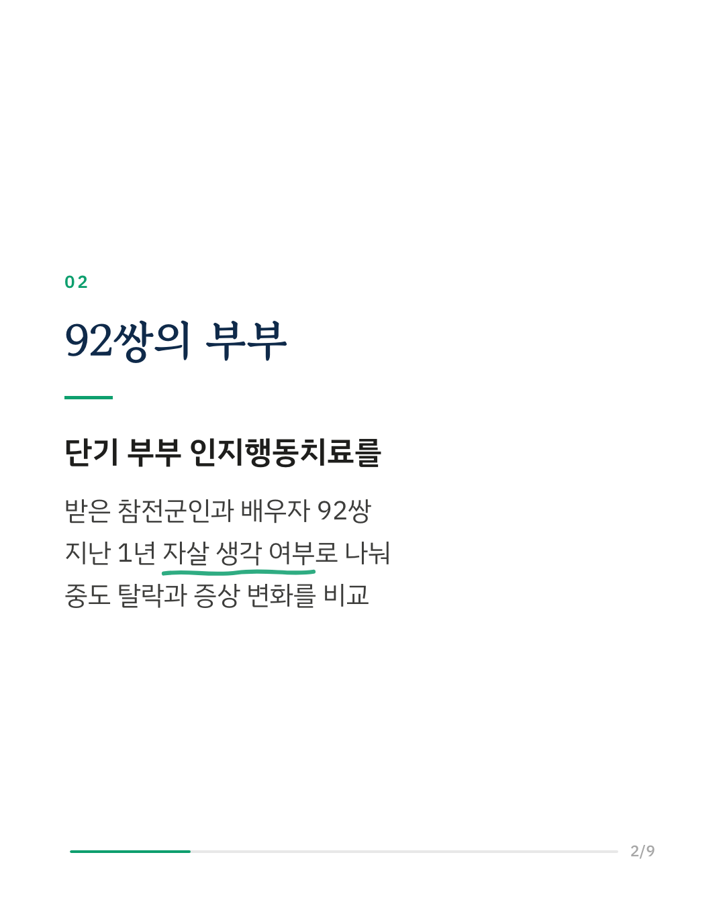
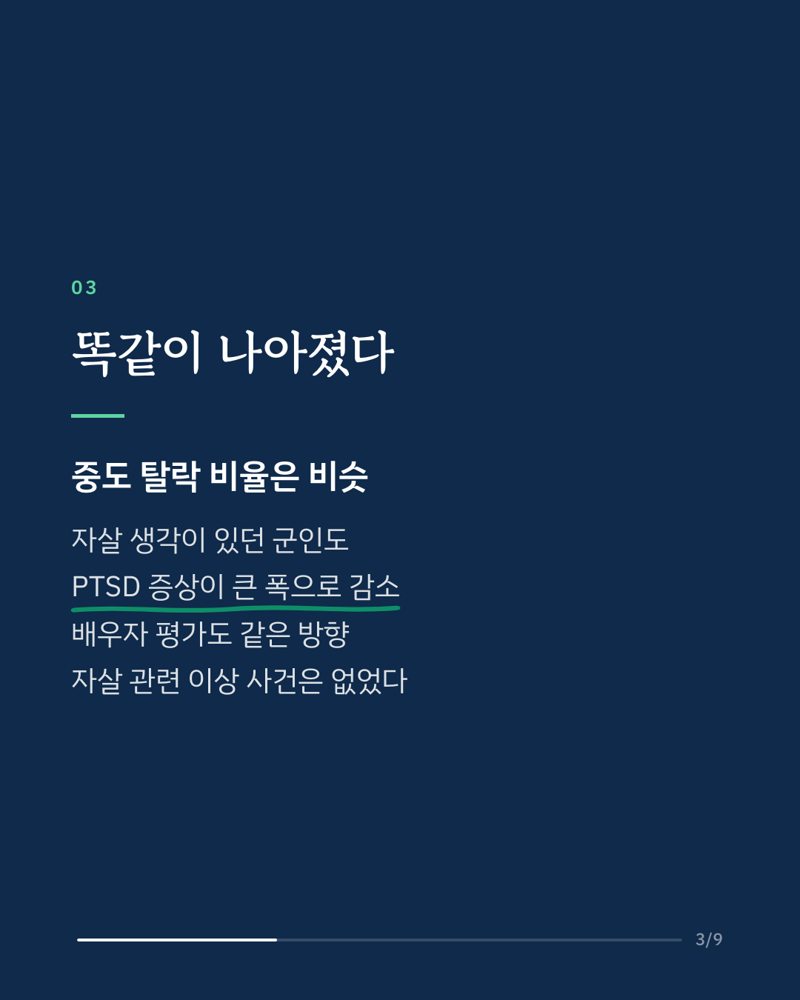
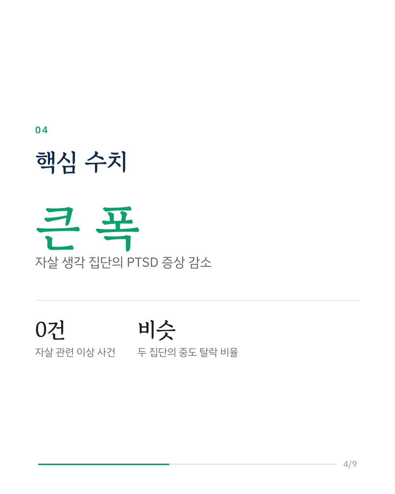
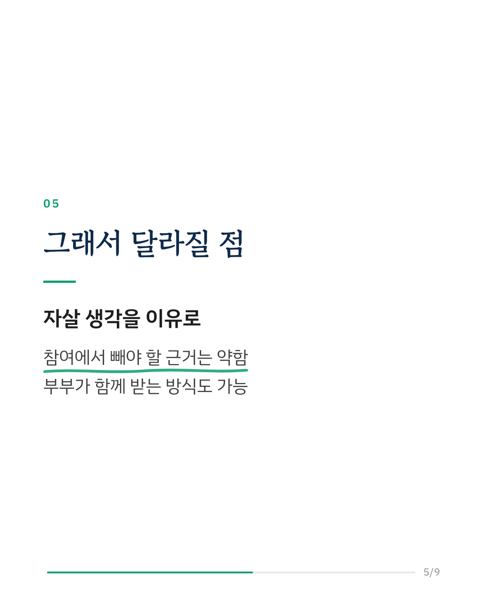
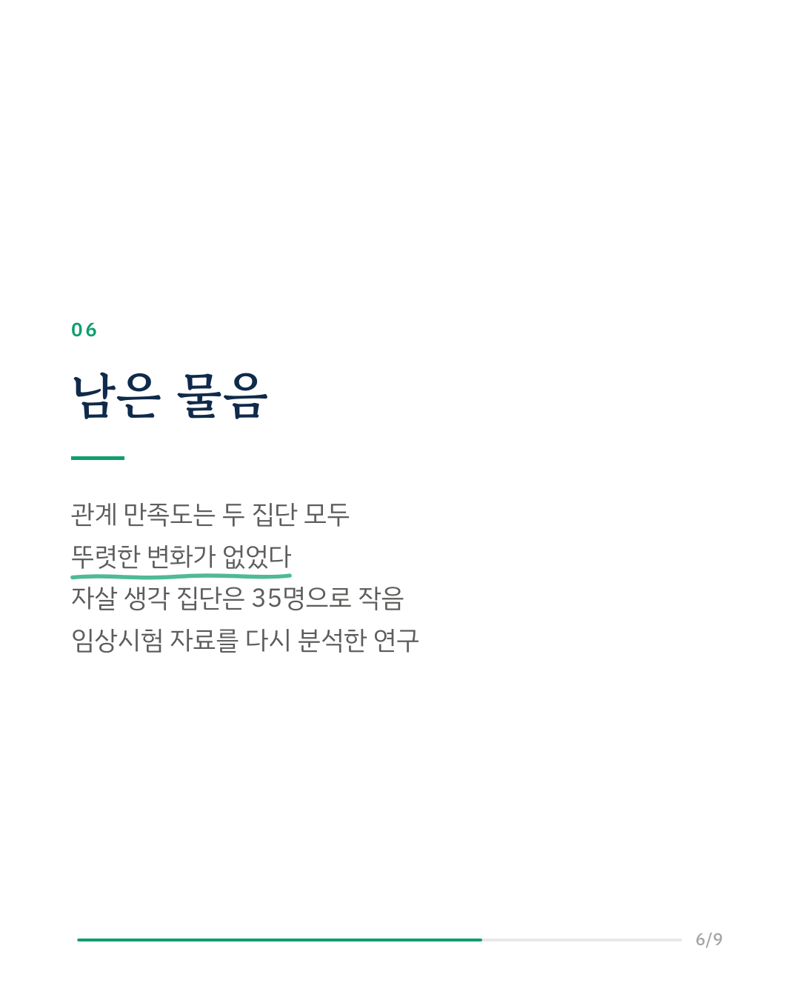
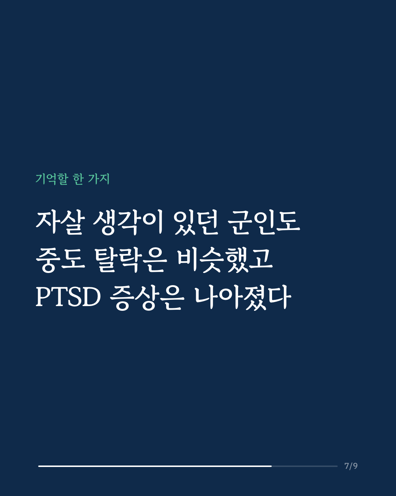
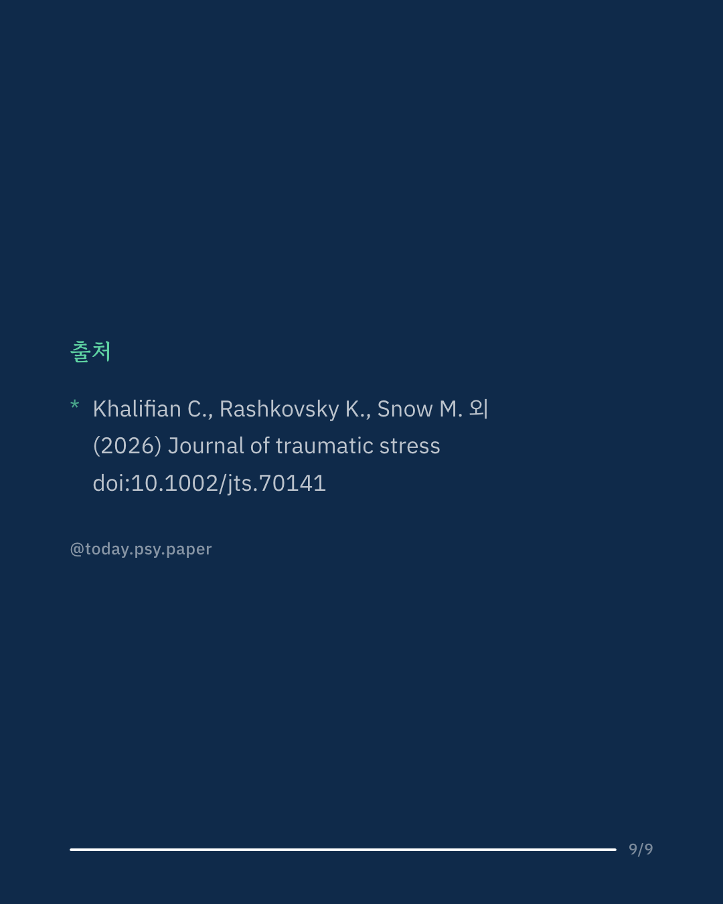

외상 후 스트레스 장애(PTSD)가 있는 참전군인의 약 절반은 자살 생각을 경험합니다. 외상 기억을 다루는 상담이 자살 생각을 키울 수 있다는 걱정 때문에, 그동안 이런 군인을 PTSD 치료에 참여시키는 데 망설임이 있었습니다. 연구진은 단기 부부 인지행동치료(bCBCT) 임상시험에 참여한 참전군인과 배우자 92쌍의 자료를 다시 분석했습니다. 지난 1년 사이 자살 생각을 보고한 군인 35명과 그렇지 않은 군인 57명을 비교했습니다. 두 집단의 중도 탈락 비율은 비슷했습니다. 자살 생각이 있던 군인도 PTSD 증상이 크게 줄었고, 배우자가 평가한 증상도 같은 방향으로 줄었습니다. 자살 관련 이상 사건은 한 건도 없었습니다. 다만 관계 만족도는 두 집단 모두 뚜렷하게 달라지지 않았고, 자살 생각이 있던 집단이 35명으로 작았습니다. Journal of Traumatic Stress (2026), 'Engagement and outcomes of veterans endorsing suicidal ideation in a couple-based treatment for posttraumatic stress disorder.' 힘든 마음이 들 때는 자살예방상담전화 109, 정신건강상담전화 1577-0199에서 도움을 받을 수 있습니다. DOI: 10.1002/jts.70141 #임상심리 #정신건강정보 #심리학연구 #논문리뷰 #외상후스트레스장애 #자살예방 #부부상담 #참전군인
python3 publish.py 43004061